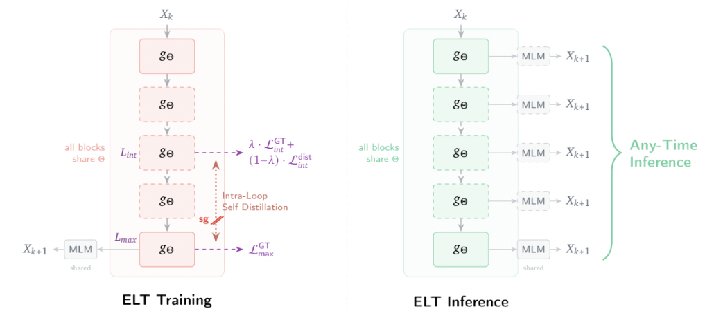
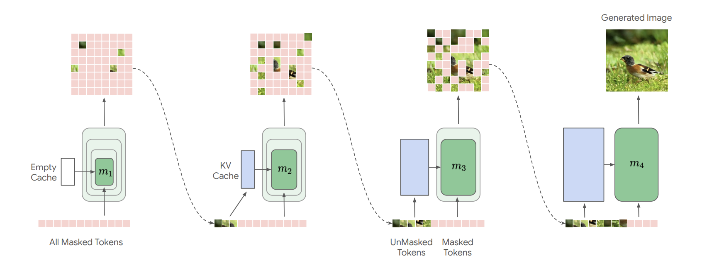
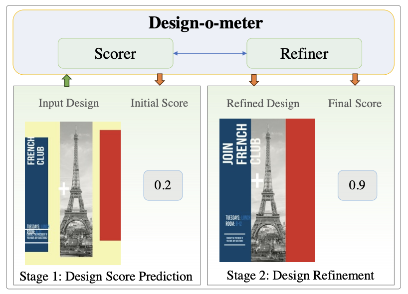
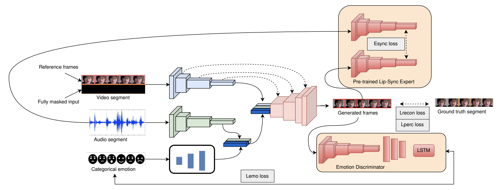
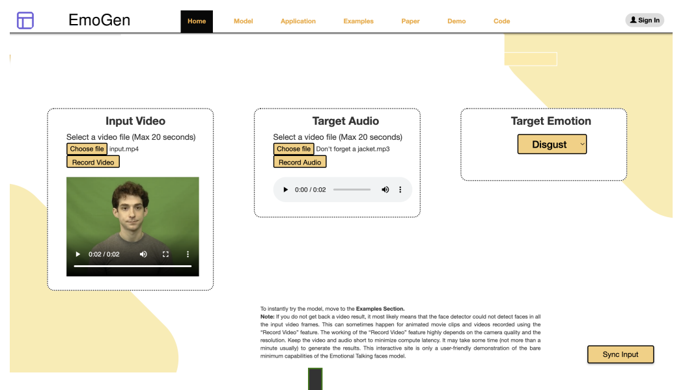

Research Activity
My research focuses on developing efficient and adaptive foundational models, with a primary emphasis on Generative
Models.
Publications

ELT: Elastic Looped Transformers for Visual Generation
Sahil Goyal, Swayam Agrawal, Gautham Anil, Prateek Jain, Sujoy Paul, Aditya Kusupati
ECCV 2026 & CVPR (EDGE Workshop) 2026
ECCV 2026
CVPR Workshop 2026

Masked Generative Nested Transformers with Decode Time Scaling
Sahil Goyal, Debapriya Tula, Prateek Jain, Sujoy Paul et al.
ICML 2025 & ICLR (DeLTa Workshop) 2025
ICML 2025
ICLR Workshop 2025

Design-o-meter: Towards Evaluating and Refining Graphic Designs
Sahil Goyal, Abhinav Mahajan, KJ Joseph et al.
WACV 2025
WACV 2025

Emotionally Enhanced Talking Face Generation
Sahil Goyal, Shagun Uppal, Sarthak Bhagat, et al.
ICCV (CVEU Workshop) 2023 & ACM MM (McGE Workshop) 2023
ICCV Workshop 2023
ACM MM Workshop 2023

Emotional Talking Faces: Making Videos More Expressive and Realistic
Sahil Goyal, Shagun Uppal, Sarthak Bhagat, et al.
ACM MM Asia 2022
ACM MM Asia 2022
🏆 Best Demo Paper
Reviewing Service
I have served as a reviewer (multiple times) at: NeurIPS, ICML, ICLR, CVPR, ECCV,
ICCV, AAMAS, WACV.